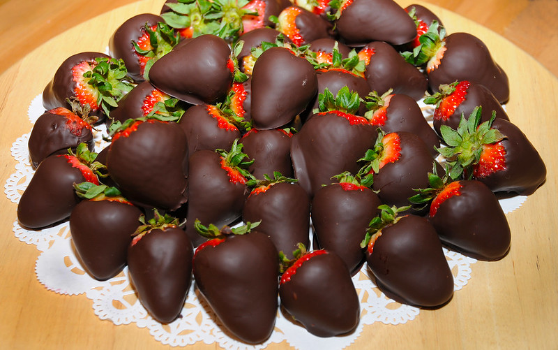

Chocolate Covered Strawberries

Description
Are you looking for a romantic dessert to share with your loved one? Have you suddenly come into a windfall of strawberries and choclate and you don't know what to do with it? Well look no futher, for I have a recipe that suits you perfectly!
Ingredients
- 1 cup of chocolate chips(semi-sweet)
- 1 1/2 of shortening (Crisco in can)
- Strawberries with stems
Directions
- Rinse the strawberries, dry and chill
- Melt the chocolate with the shortening in a large microwaveable container
- Stir until smooth
- Take your chilled strawberries, hold them by the leaf at an 45 degree angle and dip them 2/3 of the way into the chocolate mixture*
- Shake the strawberry gently to remove access chocolate
- Place the dipped strawberries on a wax covered plate, allow them to cool or refridgerate
- Enjoy!
*Mixture makes about 8-10 strawberries
Home